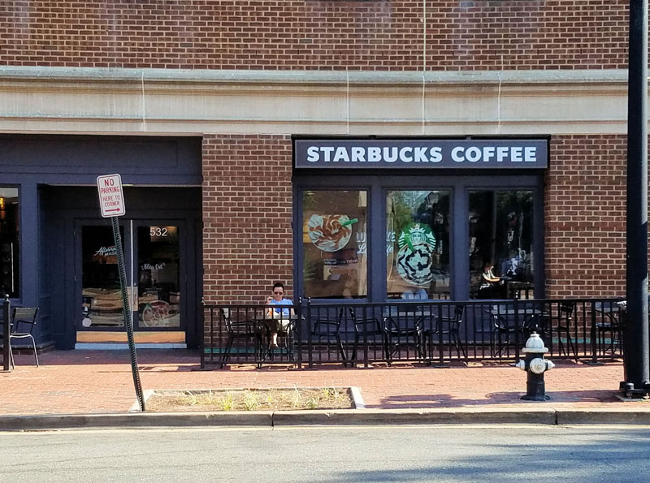
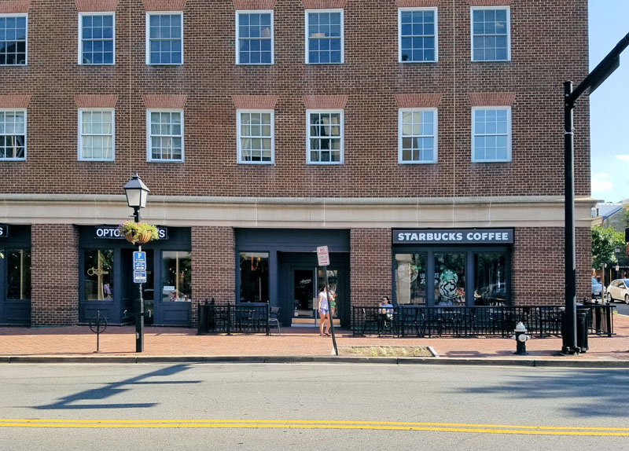
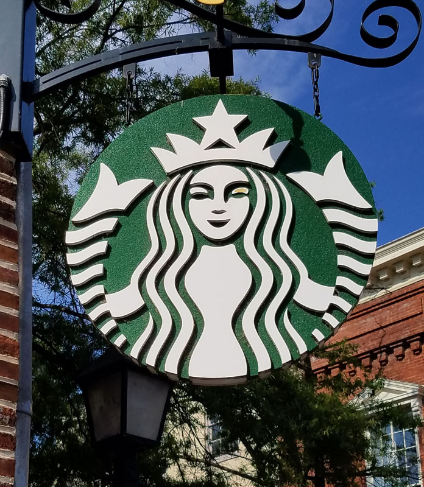

<!-- Project Template -->
<div class="container-fluid project-modal-window">
    <div class="row">
        <div class="col-sm-12 ">
            <div class="img-head" style="background-image: url('img/portfolio/commercial/starbucks/alexandria-starbucks-coffee-exterior-logo-signage.jpg');">

            </div>
        </div>
        <div class="col-sm-7">
            <div class="modal-pad">
                <h2>Starbucks Coffee</h2>
                <h5>Multi-Building Site Commercial Retail & Coffee Shops</h5>
            <strong>The Challenge:</strong>
                <p>
                  When Starbucks Corporations expansion program identified the greater Washington area as an location of interest, they contacted Wheeler Architects to aid in their entry into the market.
                </p>
                <strong>The Solution:</strong>
                <p>
                  The first store to open was the 534 King Street Alexandria location. The grand opening for the Washington market was the Dupont Circle store which was the second location to open. Attended by CEO Howard Shultz, the opening initiated Starbucks growth in the area. We went on to open over 24 stores for Starbucks. including locations in Annapolis, Falls Church, Bethesda, Oakton, Reston, McLean, Cleveland Park and Vienna.
                </p>
                <p>
                  We represented Starbucks in all public hearings before historic preservation and review boards, county commissioners, planning boards, zoning boards, city council hearings and board of supervisors hearings, among others. We achieved first time approvals in every case, saving Starbucks time and money, enabling stores to open on time and begin generating income.
                </p>
    
            </div>
        </div>
        <div class="col-sm-5 modal-pad">
            <div class="modal-pad port-img-overflow">




            </div>
        </div>


        </div>

    </div>
